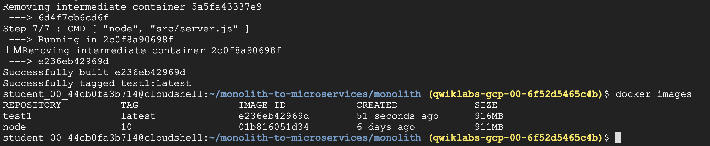

前言
Serverless(無伺服器)具有易用且快速的特性，讓使用者享managed好處，而不需要理會基礎設施的配置，就能快速的建立應用程式，這點是大家都知道的。
但一般的Serverless也有其限制，包括Runtime支援不足或是遭特定廠商綁住等缺點，這些缺點卻是容器的優點，因容器更具有靈活性與可移植性，而Google的Cloud Run則是結合兩者，讓使用者可以在無伺服器平臺上執行容器。本篇分享 Cloud Run 一點實作的經驗跟心得，如果要我用一句來形容Cloud Run，我會說「麻雀雖小五臟俱全」，那麼究竟有那五臟呢？
1. Serverless + Container
問題 / 前言
過去一般使用
Serverless服務時，常會碰到程式語言、程式版本僅有固定版本
或是套件不匹配等情況Cloud Run的出現，可以解決原生serverless，對於以上程式與套件的限制
官方是這樣描述Cloud Run featuresAny language, any library, any binary
作法 / 實做
- 透過docker build，建立自已的docker image
- 運行自已的docker image，部署至Cloud Run
此時，可以享用google managed platform托管服務，完完全全不理管後台的維護，只需要管好每次的新的docker build 版本
從下面的示意圖可以看出幾點
來源可以從自已project Cloud Build
developer 可以從Trigger動作，或是由 internet 直接操作Cloud Run
Steps1.
1 | # 建立一個docker build 測試用的image |
2 | student_00_44cb0fa3b714@cloudshell:$ docker build . --tag=test1 |
3 | |
4 | gcloud builds submit --tag gcr.io/${GOOGLE_CLOUD_PROJECT}/monolith:1.0.0 . |
dockerfile 內容
Steps2. docker build 完成

有docker build, 也有
gcloud build阿阿阿驗證剛剛build image
Steps3. Deploy Container To Cloud Run
1 | # 部署cloud run |
2 | gcloud run deploy --image=gcr.io/${GOOGLE_CLOUD_PROJECT}/monolith:1.0.0 --platform managed |
結果
- 檢視剛剛生出來的Cloud Run
1 | # list out current microservice |
2 | gcloud run services list |
一個名為
monolithmicroservice就是剛剛所建立的
驗證 Service
取得 URL
驗證 microservice 是否works
可以看到網頁的結果
Welcome to the Fancy Store!
2. 流量管理：原生功能，不用基於外部Load Balance
問題 / 前言
- 如果是使用一般的
GCE，都需要搭配Load Balance才能達到流量管理 - 使用Cloud Run 則不用，因為它內建了”流量管理”
作法 / 實做
step1. 點選 Actions: traffic 進行流量的管理
step2. 輸入期望的traffic 百分比
分流設定: 0001-duk: 20%
step3. 使用Apache ab tool 進行測試
- 目標皆為
monolith-cjsbhbijjq-de.a.run.app - 但實際上會流量會分到二隻microservice
001-duk,002-zey
1 | # Apache ab stressking |
2 | ab -n 10000 -c 10 $WEB |
結果
打開monitoring檢視
0001-duk, 0002-zey 皆有流量進入

3. Cloud Run 像是更 Free 版的 Cloud Functions
問題 / 前言
- 一般的
Serverless也有其限制，包括Runtime支援不足，這些缺點卻是容器的優點，因為容器更具有靈活性與可移植性，Cloud Run則是“結合兩者”，讓使用者可以在無伺服器平臺上執行容器 Cloud Run適用於任何程式語言，也不會綁死在某雲端平台
作法 / 實做
- 透過docker build, gcloud build的image都可以當作 Cloud Run的
runtime的bases
step1. docker build
- 將image，存放在cloud shell之中
step2. gcloud build
將image，存放在gcr.io，它是GCP Container Registry位置
結果
- Cloud Run 的好處，就是可以選自已build image
- 其中gcr.io/qwiklabs-gcp-02-7ef52e609d63/helloworld，是即是GCP Container Registry位置
- 部署Cloud Run指令為 gcloud beta run deploy，再加上image位置
- Service名稱和位置是在部署中再補上
1 | # gcr.io path |
2 | gcr.io/qwiklabs-gcp-02-7ef52e609d63/helloworld |
3 | |
4 | # cloud run |
5 | gcloud beta run deploy --image gcr.io/qwiklabs-gcp-02-7ef52e609d63/helloworld |
6 | |
7 | # 需外額外的參數 |
8 | --platform managed \ |
9 | --region us-central1 \ |
10 | --allow-unauthenticated |
hello-v1 service 已成功部署
gcloud run 運行時需要提供以下資訊
Service 名稱和位置
Unauthenticated 是否允許非驗驗證模式的存取
4. Cloud Functions 可以綁自已的domain
問題 / 前言
Cloud Run 提供的full managed 服務可以直接產出
URL，供連線測試但有很多情境會需要使用自已的
domaine.g.
CDN情境就是CNAME也讓CDN幫忙托管，因此流量就可以先經由CDN加速，再到Cloud Run Service
作法 / 實做
step1. 在原本的URL 旁邊點選Manage custom domains
step2. 輸入domain名字，以joehuang.nctu.me 為例
step3. 驗證domain
小弟使用的免費交通大學二級的
DNSnctu.me.，因此沒有在清單之中
(e.g Godday 之類大牌的DNS, 是可以直接以帳密登入做驗證服務)因為沒有在清單之中
選擇other做驗證，驗證方法有二新增TXT,CNAME二種a. 新增TXT
Add the TXT record below to the DNS configuration for joehuang.nctu.me.
b. 新增 CNAME

step4. 確認domain 是否驗證成功
step5. 增加hello-run-v1 在joehuang.nctu.me 這個網域
step6. 驗證DNS 同步
a. dig
使用
dig, 第一要確認的是status是否為NOERROR再確認,
[ghs.googlehosted.com](http://ghs.googlehosted.com)，有沒有解析出 IP(216.58.200.51)
b. DNSCHECKER
如果覺得本機
dig，會有cache影響可以選用
DNSCHECKER，去除本機cahce的影響
結果在各國DNS都可以解析到hello-run-v1.oehuang.nctu.me
c. 檢視Cloud Run: DNS Records
可以看到hello-run-v1 已經有被
ghs.googlehosted.com托管
結果
現在可以連線新的domain
在browser 上連線
hello-run-v1.oehuang.nctu.me
可以看到與原本hello-run-v1-ve3udnlh4q-uc.a.run.app看到的頁面是一樣的
5. Cloud Run 還有跟 GAE 一樣的”版本切換” 比 Cloud Functions 有更多的彈性
問題 / 前言
Cloud Run承習Cloud App Engine (GAE) 二個特性
Cloud Run 還有跟 GAE 一樣的版本切換、流量管理功能，因此在管理上比 Cloud Functions 有更多的彈性
應用程式版本設定
輕鬆託管應用程式的各種不同版本，讓user不費吹灰之力即可建立開發、測試、準備和實際工作環境
流量拆分
將連入要求導向不同的應用程式版本、快速執行 A/B 測試，並以漸進方式發布功能
作法 / 實做
- 直接部署新版，比方說新上版服務，或是改了新的
dockerfile - 可以直接用更版過的
image
step1. 直接餵新的image
Container image URL 餵更版過的image, 可以部署在相同的managed service
- 優勢一：可以延用
endpoint，不會作任何的更動 - 優勢二：直接100% 切換至新版的service
結果
延用
endpoint，直接100% 切換流量至新版的microservice如此就很方便developer做
A/B測試
6. 支援混雲合 Anthos環境
問題 / 前言
原生的Cloud Run 也有其限制，CPU 2核心、memroy上限是2GB
如果想要保留移植性，並解決運算資源的限制，要怎麼做呢？
答案就是啟用
Anthos，它是Google混合雲的solution讓Cloud Run原本部署為full managed，增加了
多雲的選擇多雲可以是
- 是雲上的
Google Kubernetes Engine (GKE) - 更可以是地端的
Anthos (GKE on-prem)
- 是雲上的
作法 / 實做
二個步驟
- 第一host 端：也就是Google Kubernetes Engine(GKE)，
**啟用Anthos** - 第二deploy端：Cloud Run上的設定，選擇部署在
Anthos
step1. 雲上的GKE：GKE的設定
GKE 環境中，啟用Cloud Run for Anthos即可
step2. Cloud Run
- 環境部署：選擇
現有的GKE環境，依圖示有偵測到run-gke2-us-central1-a這個cluster有啟用Anthos(Cloud Run for Anthos) - docker image：選用demo hello
- 在選定啟用 Anthos GKE環境後，再選用demo hello image
結果
- 思考一下，原本是以上面的實驗都是
managed全托管的服務 - 但現在，郤可以在其它你選擇的kubernetes環境，是不是很酷！
檢視一下hello app workload
Cloud Run 成功部署一個 application GKE
run-gke2-us-central1-acluster